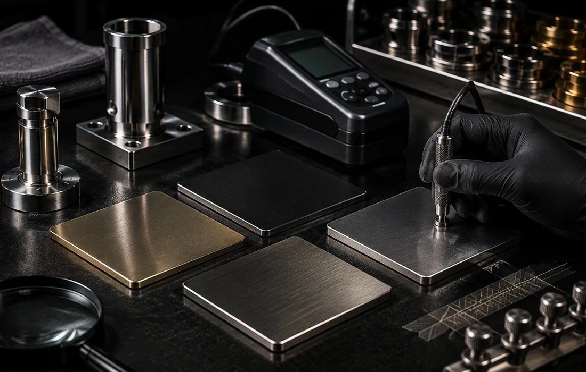

جنس قطعه چیست؟
فلز، آلیاژ، پلاستیک یا زیرکار ترکیبی میتواند گزینههای قابل بررسی را تغییر دهد.
پاسخهای این صفحه عمداً شرطمحور هستند؛ زیرکار، آمادهسازی، هندسه، شرایط استفاده و معیار پذیرش میتوانند نتیجه را تغییر دهند.

تعریف PVD، تفاوت با آبکاری، ضخامت، رنگ و محدودیتهای پایه.
از آمادهسازی سطح و فیکسچر تا نمونهسازی، بافت و کنترل اختلاف بچ.
فلز، پلاستیک، شیشه/سرامیک، شیرآلات و قطعات صنعتی باید بر اساس وضعیت واقعی بررسی شوند.
کیفیت فقط با تعریف معیار، شرایط استفاده و آزمون متناسب با پروژه قابل ارزیابی است.
چه اطلاعاتی برای استعلام لازم است، مقایسه روشها چگونه انجام شود و چه چیزی قبل از اجرا باید تأیید شود.
برای این عبارت یا دسته، سوالی پیدا نشد. عبارت دیگری امتحان کنید یا مشخصات پروژه را بفرستید.
بسیاری از سؤالهای پوششدهی بدون شناخت قطعه جواب قطعی ندارند. اگر پاسخ FAQ برای تصمیم شما کافی نیست، این چهار داده معمولاً مشخص میکند کدام مسیر باید بررسی شود.
فلز، آلیاژ، پلاستیک یا زیرکار ترکیبی میتواند گزینههای قابل بررسی را تغییر دهد.
خام، پولیششده، آبکاریشده، رنگشده، خورده یا خطوخشدار بودن سطح روی مسیر آمادهسازی اثر دارد.
دکوراتیو، مرطوب، پرتماس یا صنعتی بودن کاربرد، سطح ریسک و معیار پذیرش را تغییر میدهد.
رنگ، براقیت، بافت، تعداد و حساسیت تطابق را مشخص کنید تا سؤال از حالت عمومی خارج شود.